Working with Data Source Connections¶
Alation Cloud Service Applies to Alation Cloud Service instances of Alation
Customer Managed Applies to customer-managed instances of Alation
Applies from 2022.1
When using Compose, Dynamic Profiling, Excel Live Reports, query forms, and scheduled queries, you need to connect to data sources to get your data. You may need to work with more than one connection URI when connecting to a data source. For example, you may need to use different URIs for connecting with different databases, schemas, or roles. In Alation, you can add, edit, copy, and delete connection URIs. You can switch between different connections at any time.
Important
Alation can’t create or manage user accounts of a data source. You must independently create your account and credentials with the data source first. Then you can connect to it from Alation.
You may also have more than one set of user credentials (username and password) for a given connection URI. For example, you may have one user credential with read-only permissions and another with edit permissions. Whether you can work with multiple sets of credentials depends on how your administrator has configured Alation:
Persistent credentials. Alation stores your credentials so you can reuse them. You can add, edit, and delete saved user credentials and switch between them at any time.
Transient credentials. Alation doesn’t store credentials at all. You can only work with one set of user credentials at a time. You have to re-enter credentials when they expire (default one hour) and anytime the page refreshes. See Transient User Credentials for more information.
Single sign-on (SSO). Alation doesn’t store your credentials. You authenticate through a third-party identity provider instead of through Alation. You can only work with one set of user credentials at a time.
Note
Administrators or others wanting more details about these authentication options can see User Authentication for Data Sources.
Connection Settings Dialog¶
You can work with data source connections using the Connection Settings dialog. To authenticate with a data source in Compose or in a query form, you must select both a connection (URI) and a user (with associated credentials) in the Connection Settings dialog. This combination of connection and user is considered the active connection. Once you’ve connected, you don’t have to connect again until your credentials expire.
In 2022.1 and newer, the Connection Settings dialog is available for:
Compose
Excel Live reports
Query forms
In 2022.2 and newer, the Connection Settings dialog is also available for:
Dynamic Profiling
Scheduled queries
Compose¶
In Compose, you can access the Connection Settings dialog from the toolbar:
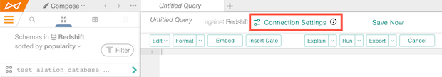Excel Live Reports¶
The Connection Settings dialog appears automatically when you download an Excel Live Report:
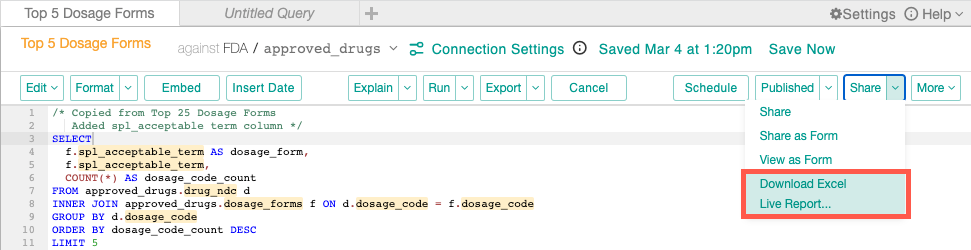Query Forms¶
In query forms, you can find the Connection Settings dialog below the Description (and Filter Results, if present):

Viewing the Active Connection¶
At any point you can view the details of the active connection by hovering over the information icon next to the Connection Settings button.
Below you’ll find instructions for working with connections and user credentials in the Connection Settings dialog.
Connections¶
Each data source has a default connection URI that’s initially defined when the data source is first added to Alation. This default connection can only be modified by a Data Source Admin in the data source settings. Anyone can use the default connection as long as they have user credentials for the data source.
Data Source Admins can add more connections that will be available to all users of the data source. Like the default connection, these extra connections can only be modified in the data source settings.
Connections created in the data source settings are called “company connections.”
Individual users can also create their own connection URIs in the Connection Settings dialog. These connections are called “private connections.” Only the person who created them can use them.
Below, you’ll find instructions for:
Editing the Default Connection¶
The default connection can only be changed by a Data Source Admin in the data source settings (not in Compose). To edit a data source’s default connection:
From the Alation Catalog, click the Apps menu.
Click Sources.
Select the data source whose connection you want to edit.
Click the More menu in the top right corner, then click Settings.
Click the General Settings tab.
Scroll down to Compose Connections and click the pencil icon next to Default Connection.
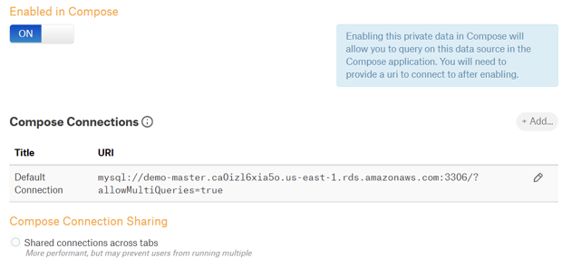Edit the URL as desired. (You can’t edit the title.)
Click the Ok button.
Adding a New Company Connection¶
To add a new company connection to a data source (you must be a Data Source Admin):
From the Alation Catalog, click the Apps menu.
Click Sources.
Select the data source whose connection you want to edit.
Click the More menu in the top right corner, then click Settings.
Click the General Settings tab.
Scroll down to Compose Connections and click the Add button.
Enter a Title and URL for the connection.
Click the Add button. The new connection will be available for all users of the data source.
Adding a New Private Connection¶
In 2022.1 and up, you can copy an existing connection to use as a starting point. You can also create a new private connection from scratch. Both methods are described below. You can do this in Compose or in a query form.
To add a new private connection:
Click Connection Settings. The Connection Settings dialog opens.
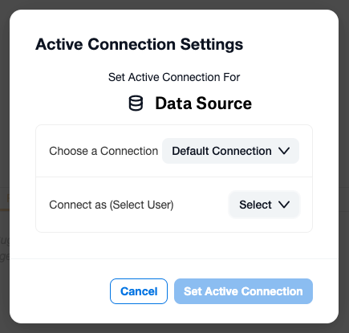
Depending on where you opened the dialog, the title at the top and the buttons at the bottom may be different. If you’re connecting with SSO, you’ll see a message saying Authentication in Progress.
Click the menu button next to Choose a Connection.
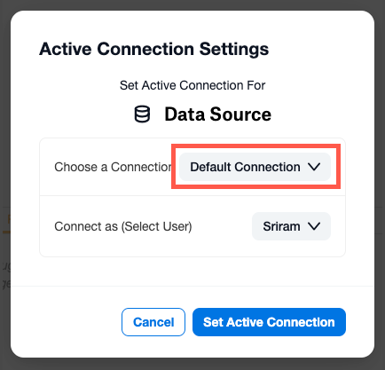
You can copy an existing connection to use as a starting point or create the new connection from scratch.
To copy an existing connection, click the pencil icon next to the connection you want to copy. Then click the Make a Copy button.
To create the new connection from scratch, click the +Add New option in the drop-down list.
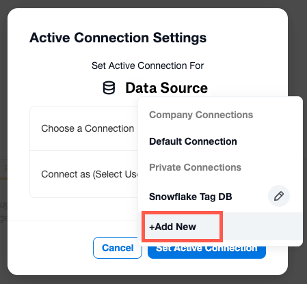
The Add New URI Connection dialog will appear.
Enter a unique Name and the URI.
Click the Save button. The new connection will automatically be selected.
To use the new connection URI, you will need to add some new user credentials. See User Credentials for instructions. Or click Cancel to exit the dialog without using the new connection.
Switching Connections¶
To switch to a different connection URI for a data source:
Click Connection Settings. The Connection Settings dialog opens.
Depending on where you opened the dialog, the title at the top and the buttons at the bottom may be different. If you’re connecting with SSO, you’ll see a message saying Authentication in Progress.
Click the menu button next to Choose a Connection.
Select the connection you want to use. You can hover over a connection name to see the connection’s URI in a tool tip.
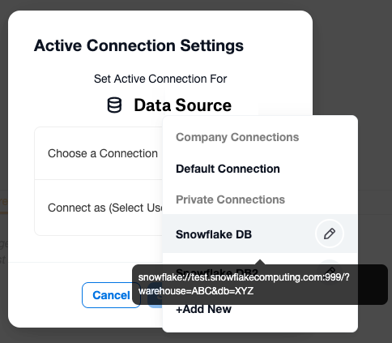Select the user you want to connect with by clicking the menu button next to Connect as (Select User). If you haven’t added credentials for this connection method yet, you’ll need to do that. See User Credentials for instructions.
Click the Set Active Connection button to use the selected connection and user credential.
Editing a Private Connection¶
To edit an existing private connection:
Click Connection Settings. The Connection Settings dialog opens.
Depending on where you opened the dialog, the title at the top and the buttons at the bottom may be different. If you’re connecting with SSO, you’ll see a message saying Authentication in Progress.
Click the menu button next to Choose a Connection.
Click the pencil icon next to the connection you want to edit.
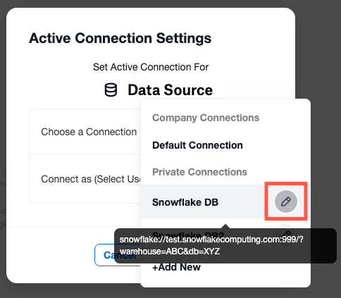
Edit the Name and URI, then click the Update button. The connection you just edited will be selected.
Select the user you want to connect with by clicking the menu button next to Connect as (Select User). If you haven’t added credentials for this connection method yet, you’ll need to do that. See User Credentials for instructions.
Click the Set Active Connection button to use the selected connection and user credential.
Deleting a Private Connection¶
To delete an existing private connection:
Click Connection Settings. The Connection Settings dialog opens.
Depending on where you opened the dialog, the title at the top and the buttons at the bottom may be different. If you’re connecting with SSO, you’ll see a message saying Authentication in Progress.
Click the menu button next to Choose a Connection.
Click the pencil icon next to the connection you want to delete.
Click the Remove Connection link.
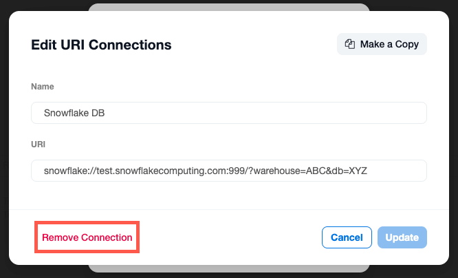A confirmation dialog will appear. Click Delete to continue with deleting the URI connection.
You’ll be taken back to the Connection Settings dialog. Click Cancel to exit the dialog.
User Credentials¶
Each connection URI has a set of associated user credentials for the data source. When you add new user credentials, they belong to the connection that you have selected. To use the same user credential with different connections, you must add the user separately for each connection.
In some cases, you can only have one user per connection:
If you’re connecting to the data source with SSO (single sign-on). In this case the identity provider controls how you authenticate.
If your administrator has enabled transient credentials. In this case Alation does not store your data source credentials, so you can’t save extra users.
Below, you’ll find instructions for:
Adding New User Credentials without Single Sign-on¶
To add new user credentials without single sign-on:
Click Connection Settings. The Connection Settings dialog opens.
Depending on where you opened the dialog, the title at the top and the buttons at the bottom may be different.
The user credential you’re about to enter will be linked to the currently selected connection. To link the user with a different connection, click the drop-down next to Choose a Connection and choose the desired connection.
Click the menu button next to Connect as (Select User).
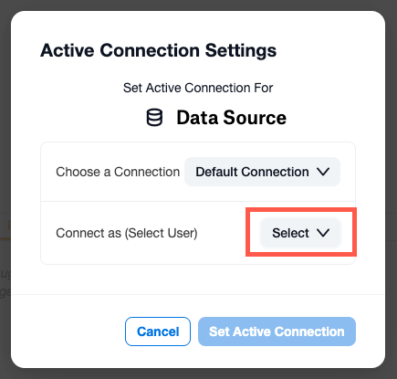
Click the +Add New option.
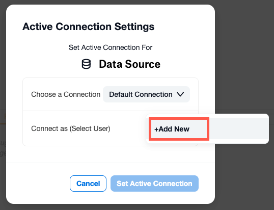The Add New Credentials dialog will appear.
Enter the user’s Username and Password for the data source.
Click the Save button. Alation will automatically try to authenticate the user with the current data source. If the authentication fails, you’ll see an error message. Correct the credentials and try again.
Once the authentication succeeds, you’ll be taken back to the Connection Settings dialog. If your administrator has enabled transient user credentials, the new user you added will replace any previous users in the drop-down.
Click the Set Active Connection button to use the selected connection and user credential.
Adding New User Credentials with Single Sign-on¶
If you’re connecting to the data source with SSO (single sign-on), Alation will redirect you to the identity provider of your company. If you have already authenticated through the identity provider, and the authentication token is still active, attempting to add a new user will simply reauthenticate with the identity provider. If the token has expired, adding a new user will remove the token and reauthenticate with the identity provider.
An SSO user must be set up in both your identity provider and the data source before you can connect with that user.
To add a new SSO user:
Click Connection Settings. The Connection Settings dialog opens.
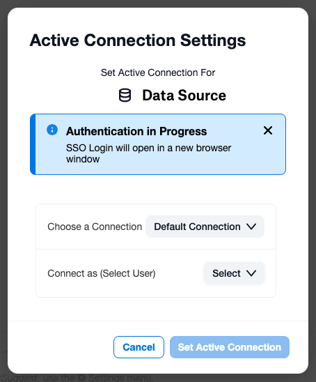Depending on where you opened the dialog, the title at the top and the buttons at the bottom may be different.
The user you’re about to create will be linked to the currently selected connection. To link the user with a different connection, click the drop-down next to Choose a Connection and choose the desired connection.
Click the menu button next to Connect as (Select User).
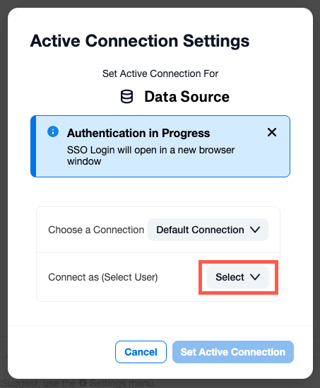Click the +Add New (SSO Login) option.
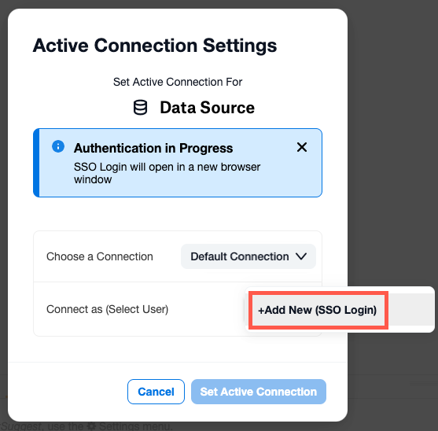If you have already authenticated with an existing user using SSO, and the authentication token is still active, the existing user will be reauthenticated. You can’t add a new user until the earlier user’s authentication token has expired.
Otherwise, the login page for your identity provider will open in a new browser tab.
Enter your credentials and log into your identity provider.
If you have multiple roles in a data source, you may be prompted to select one. For example, in AWS IAM, you will be asked to select the role you want to use in Compose. Select the role and click Continue.
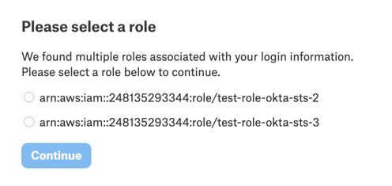The browser tab containing your identity provider will close.
Click the Set Active Connection button to use the selected connection and user credential.
Switching Users¶
If you’re connecting to the data source with single sign-on (SSO) or if your administrator has enabled transient user credentials, you can only have one user. To switch to a different user in both these situations, you must add a new user instead (see above).
Otherwise your user credentials are saved in Alation.
To switch users (without SSO):
Click Connection Settings. The Connection Settings dialog opens.
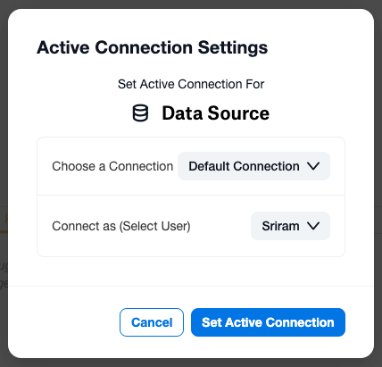
Depending on where you opened the dialog, the title at the top and the buttons at the bottom may be different.
Click the menu button next to Connect as (Select User).
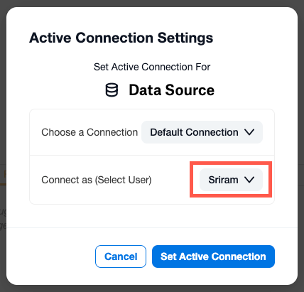
Select the user you want to connect with.
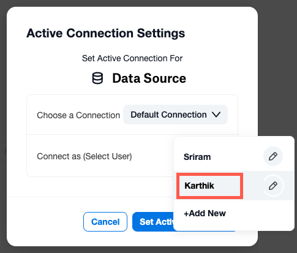If you’re connecting with SSO, click the pencil icon. This will open a new tab where you can use your identity provider to sign in with a different user.
Click the Set Active Connection button to use the selected connection and user credential. Alation will automatically authenticate the user against the current data source.
Editing User Credentials without Single Sign-on¶
If your user credentials for a data source are saved in Alation, you can edit them. To edit stored user credentials:
Click Connection Settings. The Connection Settings dialog opens.
Depending on where you opened the dialog, the title at the top and the buttons at the bottom may be different.
Click the menu button next to Connect as (Select User).
Click the pencil icon next to the user you want to edit.
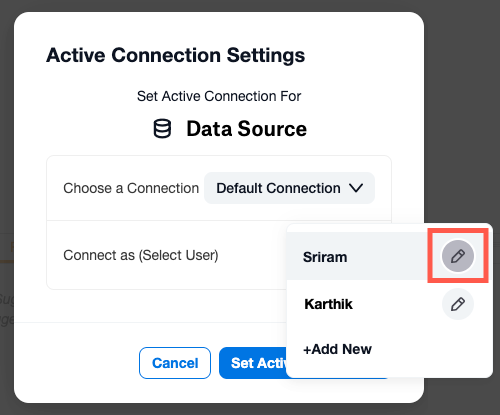
The Edit Credentials dialog will appear.
Edit the user’s Username and Password as desired.
Click the Update button. Alation will automatically try to authenticate the user with the current data source. If the authentication fails, you’ll see an error message. Correct the credentials and try again.
Once the authentication succeeds, you’ll be taken back to the Connection Settings dialog.
Click the Set Active Connection button to use the selected connection and user credential.
Editing User Credentials with Single Sign-on¶
If you’re connecting to a data source with SSO (single sign-on), Alation doesn’t store the username or password of data source users. This means that you can’t edit a data source user’s username or password from Alation. Attempting to edit an SSO user for a data source will open your identity provider’s login window. There you can log in with a different user if desired. See Switching Users for instructions.
Deleting User Credentials¶
If Alation is configured to store data source credentials, you can delete user credentials:
Click Connection Settings. The Connection Settings dialog opens.
Depending on where you opened the dialog, the title at the top and the buttons at the bottom may be different. If you’re connecting with SSO, you’ll see a message saying Authentication in Progress.
Click the menu button next to Connect as (Select User). If you’ve never connected before, the menu will say Select. Otherwise it will show the username of the last user you connected with.
Click the pencil icon next to the user you want to delete.
The Edit Credentials dialog will appear.
Click the Delete Credential link.
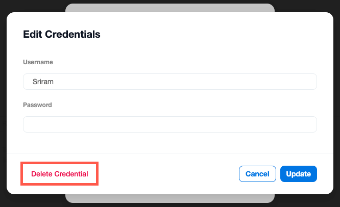A confirmation dialog will appear. Click Delete to continue with deleting the user credentials.
You’ll be taken back to the Connection Settings dialog. Click the Set Active Connection button to use the selected connection and user credential.